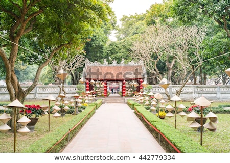
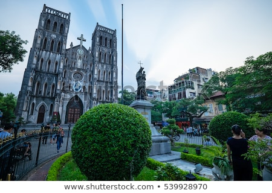
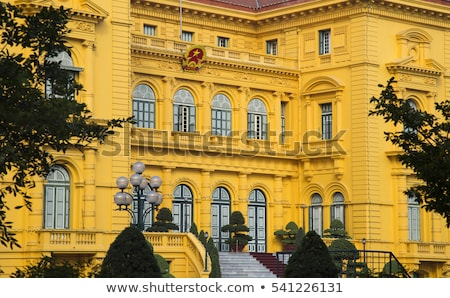
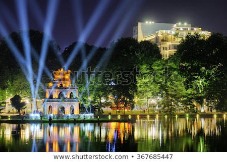

Hà Nội- sở hữu nét đẹp đa diện, dung hoà giữa hiện đại và truyền thống - chưa từng khiến du khách cảm thấy nhàm chán. Sau mỗi hành trình ở thủ đô, dù là lần đầu tiên vi vu hay đã “quen mặt” với mọi ngóc ngách,các bạn đều góp nhặt được đa dạng trải nghiệm vui chơi, giải trí, khám phá thiên nhiên, văn hoá, lịch sử, ẩm thực…;
Địa chỉ: 58, Quốc Tử Giám, Văn Miếu, Đống Đa, Hà Nội
Văn Miếu - Quốc Tử Giám là quần thể di tích về trường đại học đầu tiên của Việt Nam, bao gồm khu Văn Miếu – Quốc Tử Giám, hồ Văn và vườn Giám. Được xây dựng vào thời vua Lý Thánh Tông (khoảng năm 1070), Văn Miếu là nơi thờ Chu Công, Khổng Tử và Tứ Phối. Quốc Tử Giám - trường đại học đầu tiên tại Việt Nam - được vua Lý Nhân Tông cho thành lập thêm vào năm 1076. Toạ lạc ở phía Nam Hoàng Thành Thăng Long, Văn Miếu - Quốc Tử Giám là địa điểm lui tới thường xuyên của giới sinh viên, học sinh Hà Thành, nhằm cầu nguyện điều may mắn trên con đường khoa cử. Nếu muốn tìm hiểu về một Đại Việt nghìn năm văn hiến và mục sở thị kiến trúc đặc trưng của thời đầu nhà Nguyễn, bạn nhất định không được "lỡ hẹn" với địa điểm du lịch Hà Nội này đâu đấy.
Địa chỉ: 40 Nhà Chung, Hàng Trống, Hoàn Kiếm, Hà Nội
Chẳng biết từ bao giờ, Nhà Thờ Lớn Hà Nội đã trở thành địa điểm "sống ảo" quen thuộc của các bạn khi đi du lịch thủ đô. Nằm giữa điểm giao thoa của phố Nhà Thờ, phố Nhà Chung và phố Lý Quốc Sư, Nhà Thờ Lớn Hà Nội tạo điểm nhấn khác biệt bởi lối kiến trúc Gothic cổ điển pha lẫn phong cách Đông Dương lãng mạn. Ít người biết rằng đây là nhà thờ Thiên Chúa Giáo lâu đời bậc nhất kiêm công trình kiến trúc phương Tây đầu tiên ở Hà Nội. Nhờ vào vị trí thuận lợi, sát cạnh nhiều địa điểm ăn uống, giải trí nên Nhà Thờ Lớn Hà Nội thu hút đông đảo du khách lẫn người dân địa phương ghé thăm mỗi ngày. Bạn có thể đến đây chụp ảnh check-in rồi thoả thích ăn vặt và thưởng thức cốc "trà chanh nhà thờ" trứ danh đấy.
Địa chỉ: 01 Tràng Tiền, Hoàn Kiếm, Hà Nội
Nhà Hát Lớn Hà Nội được người Pháp khởi công xây dựng theo hình mẫu ban đầu là Nhà Hát Opéra Garnier ở Paris nhưng với quy mô nhỏ hơn. Với "tuổi đời" hơn 100 năm (từ 1911 đến nay), Nhà Hát Lớn Hà Nội đã trở thành "gương mặt đại diện" cho nét đẹp thành phố. Du khách có thể kết hợp tham quan kiến trúc Nhà Hát Lớn Hà Nội và xem các buổi trình diễn nghệ thuật đặc sắc. Xung quanh quảng trường Nhà Hát Lớn quy tụ nhiều địa điểm ăn uống, tham quan, vui chơi và giải trí đặc sắc. Rất đáng để các bạn ghé thăm đấy.
Hồ Tây có mặt từ thời vua Hùng, nằm ở quận Tây Hồ, là hồ nước tự nhiên lớn nhất nội thành Hà Nội - có chu vi khoảng 14,8 km và diện tích hơn 500 héc-ta. Hồ nước nổi tiếng kiều diễm này có sở hữu một vài tên gọi thú vị khác là Hồ Kim Ngưu, Dâm Đàm, Lãng Bạc, Đoài Hồ hay Đầm Xác Cáo. Theo nhiều chuyên gia địa chất, Hồ Tây vốn là một đoạn của sông Hồng, ngưng đọng do sông đổi dòng chảy nên tạo thành hồ nước ngọt tự nhiên. Một đặc điểm làm nên nét đẹp đặc trưng của Hồ Tây chính là màu sắc nước thay đổi theo khí hậu và thời điểm trong ngày - đảm bảo mang đến cho bạn trải nghiệm cực “mãn nhãn”.
Dù là sáng sớm tinh mơ hay đã về đêm muộn, Hồ Hoàn Kiếm đều có sức sống rất riêng. Đông đảo người dân địa phương và khách du lịch đến đây để tập thể dục, tản bộ ngắm cảnh, tham quan di tích lịch sử, ăn uống, mua sắm. Vào dịp cuối tuần, khu vực xung quanh Hồ Hoàn Kiếm còn diễn ra nhiều hoạt động lễ hội, trình diễn nghệ thuật đặc sắc. Nếu muốn cảm nhận năng lượng trẻ của Hà Nội, bạn nhất định phải đến Hồ Hoàn Kiếm đấy